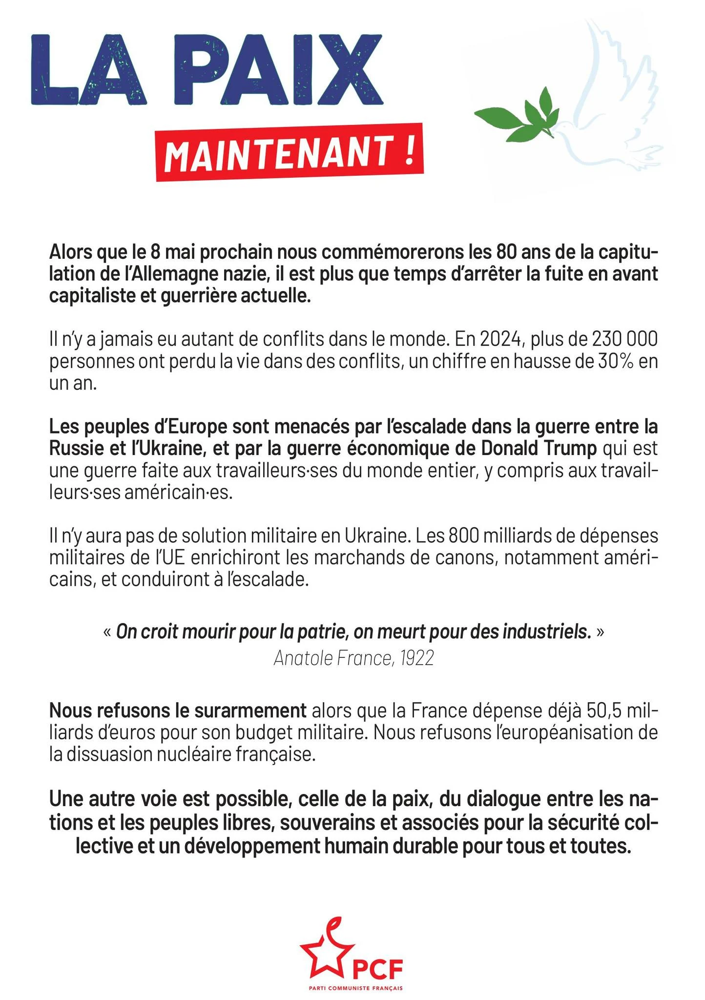
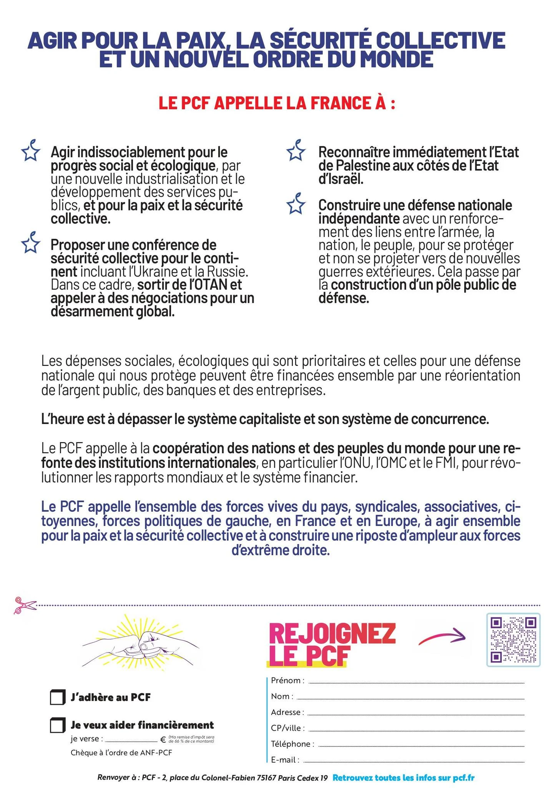

Tract
« La paix maintenant ! » Le tract du PCF avant le 8 Mai
Date indiquée par Facebook · 18 avril 2025
Repères éditoriaux
À l’approche du 80ᵉ anniversaire de la capitulation de l’Allemagne nazie, le PCF défend dans ce tract le dialogue, la coopération et la sécurité collective. Le verso appelle notamment à une conférence européenne de sécurité et à la reconnaissance immédiate de l’État de Palestine.


Sources
Archive rouge · document diffusé sur Facebook · AR-0002-FB-01145
À lire aussi · « Partout ensemble pour la Paix ! » Le rendez-vous du 21 septembre 2024